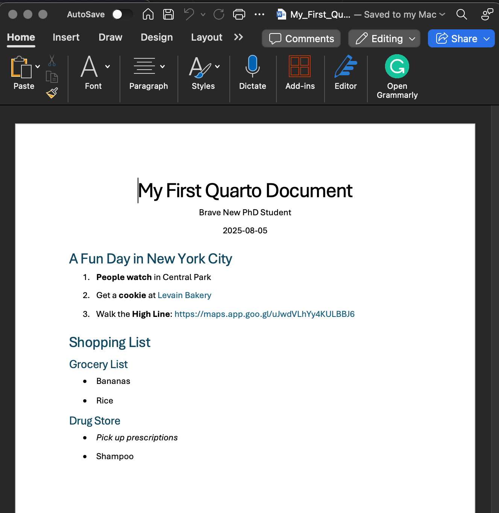
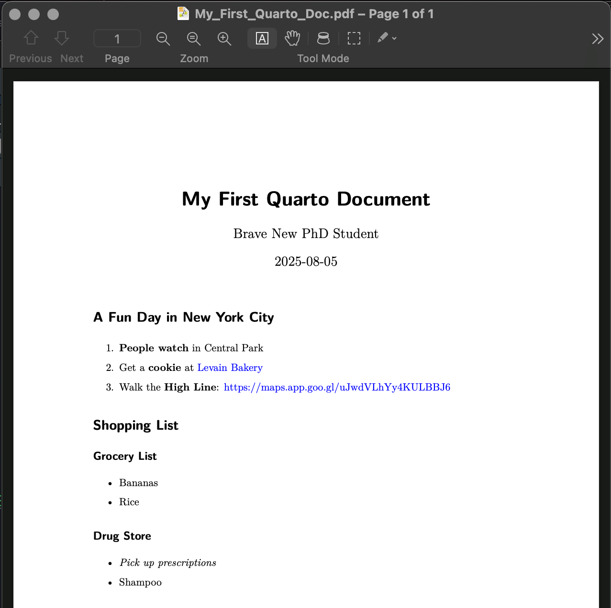
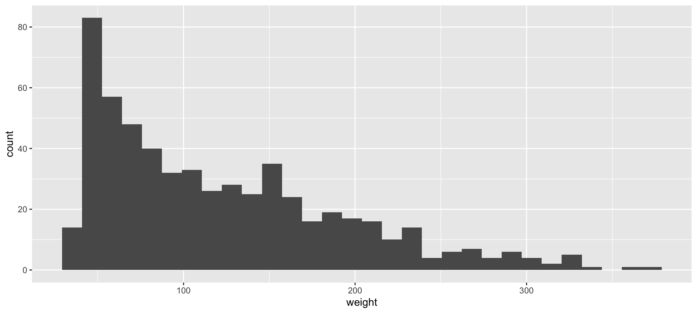
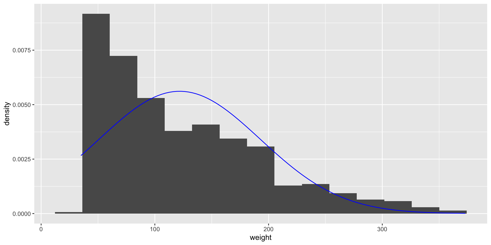
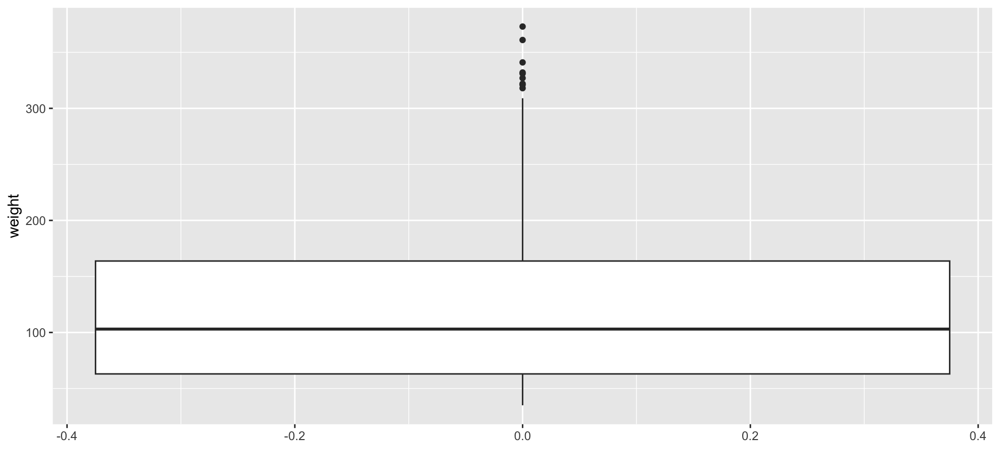
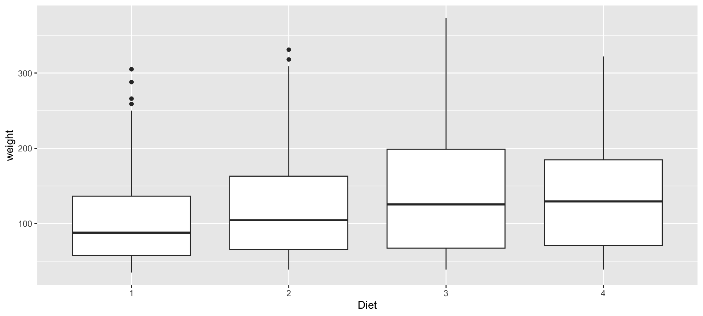
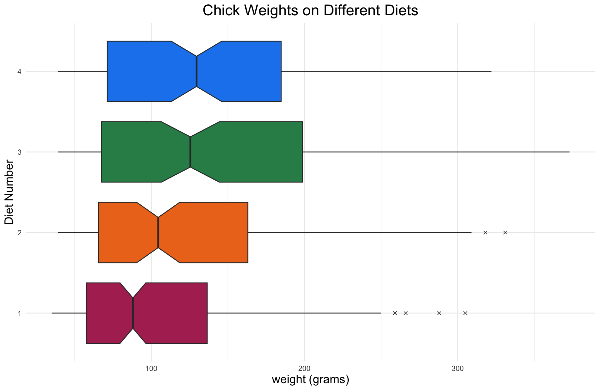

Lab 2: Quarto, Summary Statistics, and Plotting
September 10, 2025
The Data Lifecycle
Data entry, import, cleaning
Data analysis
Creating plots
Running \(t\) tests, ANOVAs, etc.
Reporting & Documentation
Archiving every step you did to manipulate your raw data
Communicating your results clearly to (a) your audience, (b) your collaborators, and (c) your future self
In this course, we’ll focus on steps 2 and 3, but you will also learn some data cleaning & manipulation methods along the way
Quarto
Quarto is a text-processing language that is built into RStudio. It is used to generate reports (pdf, html, Word) that integrate text, R code, R output, and R-generated plots.
Quarto is the “next generation” of a tool known as R Markdown.
Quarto files have “.qmd” extensions, R Markdown files have “.Rmd” extensions
Most (but not all) functionality is the same between Quarto and R Markdown
This document is written using Quarto!
You are expected to complete your homework assignments with Quarto if possible
With instructor permission, you may use R Markdown (.Rmd) instead of Quarto
Quarto
To start a Quarto document (follow along!):
- File -> New File -> Quarto Document…
- Or from the drop-down menu at the upper-left side of the RStudio window
- Select “Document” on the left-hand side
- The “Presentation” and “Interactive” tabs are outside the scope of this class
Choose the output type that you want (pdf or Word)
Set “Engine: knitr” if this is not set already
De-select “Use visual markdown editor”
Quarto
Hit “OK”, a new file will open in your script pane.
- You might see a banner near the top of your script pane that says “Package rmarkdown required but is not installed.” If so, hit “Install”.
Review: how do we check if packages are installed??
Quarto gives us an example document that illustrates some of the features of Markdown.
To compile the document, hit the “Render” button above the script, go to File -> Render Document, or type Cmd/Ctrl + Shift + K
- You will be asked to save the qmd file first
In the same folder in which you saved the qmd document, a pdf or Word document should be produced (it might even open automatically). Take a minute or two to look at and compare the pdf document and the qmd script.
Quarto
If you want create pdfs with Quarto, you need to install something called a LaTeX distribution. This just takes a couple of lines of code:
Either pdfs or Word documents are acceptable for lab activities/homework
- Don’t submit html documents for lab activities/homework
Quarto
Let’s take a closer look at the first few lines of the qmd file. The first few lines will look something like this:
---
title: "Untitled"
format: docx
---This is called A YAML header. You can change the title to anything that you want, so long as it is within quotation marks. The “format” line only understands certain inputs, and it’s easiest to specify the type of output through the point-and-click menu we used to create this file.
You can also add an author and date to this section like this.
---
title: "My First Quarto Document"
format: docx
author: Brave New PhD Student
date: today
---Quarto
Documentation for Quarto is available on its website: https://quarto.org/docs/guide/
On your own, you might want learn about some of the basic features: https://quarto.org/docs/authoring/markdown-basics.html
There are many features, so the documentation might be overwhelming at first. Next, we’ll guide you through some of the most useful-to-you features.
Quarto
After the YAML header, you can write any text you’d like.
Quarto also has some features to mark up your text:
Put 1 asterisk before and after text to make *italics*
Put 2 asterisks before and after text to make **bold**
Use hash marks to delineate different sections of your text
# Level 1 Header
## Level 2 Header
Quarto Example: Word Output
Quarto Document::
---
title: "My First Quarto Document"
format: docx
author: Brave New PhD Student
date: today
---
# A Fun Day in New York City
1. **People watch** in Central Park
2. Get a **cookie** at [Levain Bakery](https://levainbakery.com/)
3. Walk the **High Line**: <https://maps.app.goo.gl/uJwdVLhYy4KULBBJ6>
# Shopping List
## Grocery List
* Bananas
* Rice
## Drug Store
* *Pick up prescriptions*
* ShampooWord Document:

Quarto Example PDF Output
Quarto Document::
---
title: "My First Quarto Document"
format: pdf
author: Brave New PhD Student
date: today
---
# A Fun Day in New York City
1. **People watch** in Central Park
2. Get a **cookie** at [Levain Bakery](https://levainbakery.com/)
3. Walk the **High Line**: <https://maps.app.goo.gl/uJwdVLhYy4KULBBJ6>
# Shopping List
## Grocery List
* Bananas
* Rice
## Drug Store
* *Pick up prescriptions*
* ShampooPDF Document:

Including R Code in Quarto
To begin an R code “chunk”, type 3 back ticks (the button above “Tab” on most keyboards), followed by {r}
To end an R code “chunk” type 3 back ticks.
R code chunks look like the following (without the extra spaces):
` ` ` {r}
x <- 2 + 3 # R code goes in between the sets of tick marks
` ` `Keyboard shortcut: Cmd/Ctrl + Opt + i
Including R Code in Quarto
As with ordinary R scripts, you can use Cmd/Ctrl + Enter/Return to run R commands
- Click within the code chunk first
By default, output (e.g., plots) are displayed within the Rmd pane
- If you want move output to its usual spot, click on the gear icon (to the right of the Render button) and check “Chunk Output in Console”
Including R Code in Quarto
Within the curly brackets that open an R code chunk, you can specify several options. A full list is on the cheat sheet, but these are the options I use most often.
{r echo = TRUE, eval = TRUE, include = TRUE, fig.height = 7, out.height = “3in”}
echo: TRUE or FALSE, whether to include the R code along with the outputeval: TRUE or FALSE, whether to include the R output along with the codeinclude: TRUE or FALSE, if FALSE evaluate but don’t include input or outputfig.height/fig.width: dimension of plot in the graphics engine (in inches)out.height/out.width: dimension of plot output in the final document (must specify unit manually)
Practice
How would you implement the following?
A chunk that shows the code for multiplying 2 * 3, but not the output
A chunk that shows the output for multiplying 3 * 4, but not the code
A chunk that shows both the code and output for multiplying 4 * 5
Practice Answers
- A chunk that shows the code for multiplying 2 * 3, but not the output
{r echo = TRUE, eval = FALSE}
- A chunk that shows the output for multiplying 3 * 4, but not the code
{r echo = FALSE, eval = TRUE}
[1] 12- A chunk that shows both the code and output for multiplying 4 * 5
{r echo = TRUE, eval = TRUE}
Summary Statistics with R
Today, we’ll work with the ChickWeight dataset that’s found in R’s datasets package. The datasets package should come with your installation of R, so there is no need to install it.
To load in the data, we can use the data function. Take a minute to look at the help page for this dataset to understand what information is given.
Summary Statistics with R
We can turn ChickWeight into a tibble for use with tidyverse functions.
Inspect the data:
Rows: 578
Columns: 4
$ weight <dbl> 42, 51, 59, 64, 76, 93, 106, 125, 149, 171, 199, 205, 40, 49, 5…
$ Time <dbl> 0, 2, 4, 6, 8, 10, 12, 14, 16, 18, 20, 21, 0, 2, 4, 6, 8, 10, 1…
$ Chick <ord> 1, 1, 1, 1, 1, 1, 1, 1, 1, 1, 1, 1, 2, 2, 2, 2, 2, 2, 2, 2, 2, …
$ Diet <fct> 1, 1, 1, 1, 1, 1, 1, 1, 1, 1, 1, 1, 1, 1, 1, 1, 1, 1, 1, 1, 1, …Notes:
weightandTimeare both numeric (dbl) type variablesChickis an ordered factor (ordered by final weight within diet)Dietis a factor
Summary Statistics with R
The summary() function gives summary statistics based on the object type.
weight Time Chick Diet
Min. : 35.0 Min. : 0.00 13 : 12 1:220
1st Qu.: 63.0 1st Qu.: 4.00 9 : 12 2:120
Median :103.0 Median :10.00 20 : 12 3:120
Mean :121.8 Mean :10.72 10 : 12 4:118
3rd Qu.:163.8 3rd Qu.:16.00 17 : 12
Max. :373.0 Max. :21.00 19 : 12
(Other):506 For numeric variables, min, IQ, median, mean, 3Q, and max
For factors, the number of observations at each factor level
Summary Statistics with R
Frequencies:
Proportions:
Percentages:
Summary Statistics with R
Quantiles: .25 (1Q), .50 (median), and .75 (3Q)
Summary Statistics with R
Measures of central tendency:
- Mean:
- Median:
- 5% Trimmed Mean:
Summary Statistics with R
Frequencies by factor levels:
The mode:
Summary Statistics with R
Measures of variability:
Summary Statistics with R
The functions skewness and kurtosis are available in the e1071 package (named for someone’s stats course). You might need to install the package first.
Once e1071 is installed, run library() to load it into your R session. You will need to do this each time you load a new session and want to use e1071.
And finally, skewness and kurtosis:
Caution
Only run install.packages if a package is not already installed!
- Running
install.packagesin a Quarto document can prevent your document from compiling. Avoid adding this to your homework to avoid headaches!
Summary Statistics with R
We can also use “tidy” functions to compute summary statistics. Here, we compute the mean, standard deviation, skewness and kurtosis of weights for each of the four Diet groups.
ChickWeight %>% group_by(Diet) %>%
summarize(mean = mean(weight), sd = sd(weight),
skew = skewness(weight), kurt = kurtosis(weight))# A tibble: 4 × 5
Diet mean sd skew kurt
<fct> <dbl> <dbl> <dbl> <dbl>
1 1 103. 56.7 1.07 0.612
2 2 123. 71.6 0.950 0.184
3 3 143. 86.5 0.759 -0.390
4 4 135. 68.8 0.398 -0.673Summary Statistics with R
Correlations are computed with the cor() command.
Plotting with ggplot2
ggplot2 is part of the tidyverse, and is especially useful for creating pretty plots quickly for datasets
ggplot2 is loaded in with the tidyverse, or we can load it in separately
Note: “ggplot2” is the package name, “ggplot” is the plotting command.
Grammar of ggplot
Every ggplot begins with the ggplot command.

An empty plotting window shows up, because ggplot doesn’t know what we want to plot!
Grammar of ggplot
To tell ggplot what goes on the x/y axes, we use the aesthetics argument aes. The following code tells ggplot to put Time on the x axis and weight on the y axis. This works becuase Time and weight are both column names in the ChickWeight dataset.
Now, we have axis labels, but nothing else. Next, we need to tell ggplot what type of plot we want.
Grammar of ggplot
Additional features (such as the type of plot) are added on with the + operator.
geom_point() is the command for a scatterplot.
ggplot “geoms”
Different plot types are specified with different “geom” functions added on to the ggplot command
geom_point(): scatterplotsgeom_path(): line graphsgeom_histogram(): histogramsgeom_boxplot(): box plotsgeom_bar()andgeom_col(): bar plotsgeom_qq()withgeom_qq_line(): qq plotsand many others! Look at the help page for
ggplot2for a list.
Histograms
For histograms, only one variable needs to be specified in aes().
Histograms
ggplot usually complains about the number of bins. To change, use the bins (change # bins) or binwidth (change bin width) arguments.
Histograms with Normal Overlay
As we learned about in Lecture 2, sometimes we want to draw a normal distribution on top of a histogram with the same mean and standard deviation as the data.
Unfortunately, the code for this is complicated. Graph on next slide.
Histograms with Normal Overlay
Bar Plots
Use geom_bar() to let R compute frequencies for you (aes takes 1 variable)
Bar Plots
Use geom_col() to specify column heights yourself (aes takes 2 variables)
Box Plots
Box plot of one variable:
Box Plots
Box plots of one variable conditional on another variable:
Normal QQ Plots
In Lecture 2, we will learn about QQ plots for assessing normality.
For QQ plots, need to specify the variable with aes(sample = ...).
Making Beautiful Plots
There are a lot of ways to customize ggplot to create exactly the plot you want. Here, I’ve customized the box plot function. Spend some time looking at the documentation for the arguments used, and try omitting some parts of the plot to see their effects. Output shown on the next slide.
ggplot(ChickWeight, aes(Diet, weight, fill = Diet)) +
geom_boxplot(notch = TRUE, outlier.shape = 4) +
labs(x = "Diet Number", y = "weight (grams)",
title = "Chick Weights on Different Diets") +
theme_minimal() +
coord_flip() +
guides(fill = "none") +
scale_fill_manual(values = c("maroon", "chocolate2",
"seagreen4", "dodgerblue2")) +
theme(plot.title = element_text(hjust = 0.5, size = 18),
axis.title = element_text(size = 14))Making Beautiful Plots
Some More Resources
Run the following commands in the console:
Or, just search for what you want to do - seriously!
Hang In There!
You don’t need to be an R pro by the end of this course
We all have different backgrounds
Use each other as resources
For this course, we just want you to master the basics:
- Import data
- Generate simple plots
- Run statistical tests
- Make simple reports